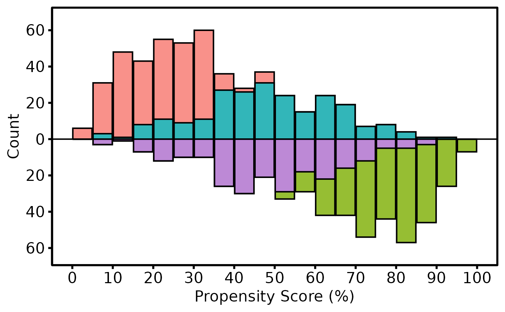
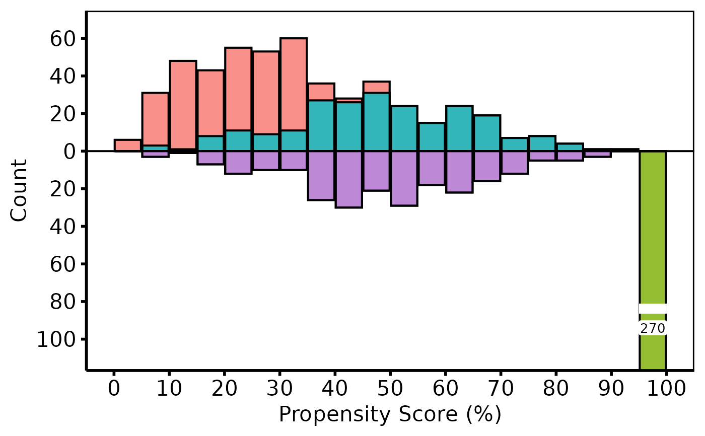

Builds a bare mirrored-histogram ggplot2 object from an
hv_mirror_hist data object. Bars for the treated group
appear above the x-axis; bars for the control group appear below. Matched
or weighted patients are shown in a contrasting shade. Compose with
+ to add color scales, axis labels, and theme_hv_manuscript.
Usage
# S3 method for class 'hv_mirror_hist'
plot(x, alpha = 0.8, split_tall = FALSE, split_mult = 1.5, ...)Arguments
- x
An
hv_mirror_histobject fromhv_mirror_hist. The fill legend reads"<group>, all"and"<group>, matched"(or", weighted") fromgroup_labels. Ascale_fill_manual()you add replaces that scale; passlabels = x$meta$fill_labelsto keep the readable labels.When one arm piles into a single bin (say 648 of 685 patients at a score of 95 to 100\ arm and the matched bars cannot be read.
split_tall = TRUEsizes the y-axis to the tallest bar of the matched (or weighted) layers or of the arm whose tallest bar is smaller, timessplit_mult. Any taller "all patients" bar is clipped at the panel edge, cut by a white gap, and labeled with its full count on a white label. The limits are set withcoord_cartesian, which clips a bar instead of dropping it, so do not addylim()or scale limits on top; ascale_y_continuous(labels = abs)without limits is safe.- alpha
Bar transparency in \([0,1]\). Default
0.8.- split_tall
Logical. Split "all patients" bars too tall for an axis sized to the matched bars and the smaller arm. Default
FALSE.- split_mult
Number greater than 1: the axis cap as a multiple of the tallest matched bar or tallest bar of the smaller arm. Used only when
split_tall = TRUE. Default1.5.- ...
Ignored; present for S3 consistency.
Value
A bare ggplot object; compose with +
to add color scales, axis limits, labels, and
theme_hv_manuscript. With split_tall = TRUE it
carries two extra layers after the bars: the white gaps
(geom_rect) and the count labels (geom_label).
See also
hv_mirror_hist to build the data object,
theme_hv_manuscript for the publication theme,
sample_mirror_histogram_data for example data.
Other Propensity Score & Matching:
hv_mirror_hist(),
hv_rmst_contrast(),
hv_rmst_curves(),
plot.hv_rmst_contrast(),
plot.hv_rmst_curves(),
sample_covariate_balance_data()
Examples
dta <- sample_mirror_histogram_data(n = 500)
mh <- hv_mirror_hist(dta)
#> mirror_histogram diagnostics: n=1000 dropped=0 [see $tables$diagnostics]
plot(mh) +
ggplot2::labs(x = "Propensity Score (%)", y = "Count") +
theme_hv_poster()

# One tall bar: most treated patients pile into the top bin.
dta_tall <- dta
top <- dta_tall$tavr == 1 & dta_tall$match == 0
dta_tall$prob_t[top] <- 0.98
mh_tall <- hv_mirror_hist(dta_tall)
#> mirror_histogram diagnostics: n=1000 dropped=0 [see $tables$diagnostics]
plot(mh_tall, split_tall = TRUE) +
ggplot2::labs(x = "Propensity Score (%)", y = "Count") +
theme_hv_poster()
